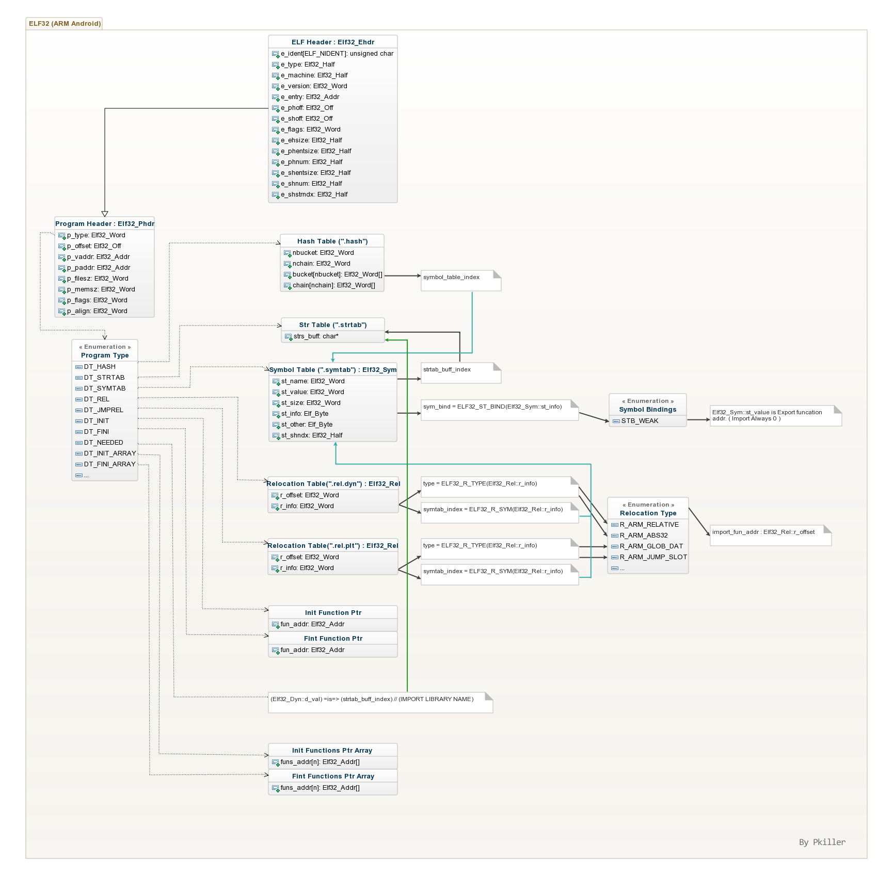

ELF32 (Android ARM)
18/Jun 2016
首先勘误： 下图中 用STB_WEAK 来表示导出函数是错误的。

1. .rel.dyn(DT_REL) 和 .rel.plt(DT_JMPREL) 的区别.
在任意位置 使用静态方式 调用导入函数(API)
引用项会出现在.rel.plt(DT_JMPREL)中, TYPE为R_ARM_JUMP_SLOT
例子:
exit (0);
在函数内 使用指针方式 调用导入函数(API)
引用项会出现在.rel.dyn(DT_REL)中, TYPE为R_ARM_GLOB_DAT
例子:
void fun(){
typedef void *(*my_exit )(int);
my_exit exit_ptr = (my_exit )exit;
exit_ptr(0);
}
在全局 引用导入函数(API)指针
引用项会分别在.rel.dyn(DT_REL)和.rel.plt(DT_JMPREL)中各加入一条:
在.rel.dyn(DT_REL)中加入TYPE为R_ARM_ABS32.
在.rel.plt(DT_JMPREL)中加入TYPE为R_ARM_JUMP_SLOT.
例子:
void *g_exit = (void*)exit;
2. GOT 概念(GLOBAL OFFSET TABLE)
module的GOT表被加载时, 会由linker填充该module导入函数的addr. 之后该module中的代码通过GOT中被填充好的地址值来间接调用导入函数.
GOT表无需太关注, 因为GOT中的每一项Elf32_Addr. 都有DT_REL和DT_JMPREL中Elf32_Rel::r_offset对其的指向,被所有Elf32_Rel::r_offset指向形成的这一片连续Elf32_Addr区域就被称为”GOT表”, 理论上讲所有的Elf32_Rel::r_offset也可以指向不连续的区域(前提是linker不再按照连续地址方式处理. 目前linker中对got表的处理使用了地址连续的方式.).这样在对抗和逆向中就多了一条路径: 通过Elf32_Rel::r_offset来找到对应got项.
DT_PLTGOT与”.got”
dynamic的DT_PLTGOT处于section的”.got”范围之中: “.got” :[item,item,…,DT_PLTGOT[item,item,…]]
3. HOOK 导入/导出函数.
导入函数信息存储于Elf32_Rel结构中, 该结构位于: (program_table::p_type == PT_DYNAMIC)的项下的Elf32_Dyn::d_type == DT_REL(.rel.dyn) 与 DT_JMP_REL(.rel.plt).
Elf32_Rel中保存了导出函数的offset, 和对应的symbol_table_index以及rel_type(类型). 这里的关键是symbol_table_index.
通过hash table把要HOOK的函数名(符号名)转为对应的symbol_table_index, 然后遍历Elf32_Dyn数组中的DT_REL与DT_JMP_REL中找到与之对应的项, 该项中的Elf32_Rel::r_offset中指向了一个sizeof(Elf32_Addr)长度的地址, 该地址存放的正是导入函数的地址. 所以执行如下便可完成hook:
*(Elf32_Addr*)(base + Elf32_Rel::r_offset ) = New_Fun_Ptr ;
补充: 以上方法只能HOOK到静态调用, 对于通过dlsym()获取函数指针的调用方法可以通过如下方法:
修改"导入函数"所在的模块中用于描述该导出函数信息的Elf32_Dym对象, 然后修改其Elf32_Sym::st_value, 这样可以将dlsym()方式一并HOOK. (见下面的"导出函数"HOOK方法)
要么使用inline hook解决一切麻烦.
导出函数的offset地址存储在Elf32_Sym::st_value中( Elf32_Sym::st_shndx != SHN_UNDEF 表明该Elf32_Sym存储的是一个导出函数项(android的linker源码中这样处理). 根据实际观察，通常导出函数的st_shndx为8. ), 导出函数所在Elf32_Sym结构的定位与上面导入函数的寻找方式一样, 都是通过hash table. 最后修改方法如:
*(Elf32_Addr*) Elf32_Sym::st_value = New_Fun_Ptr;
补充: 以上方法只能在对文件进行HOOK, 因为当自身模块代码运行之前, Elf32_Sym::st_value已经被linker填充到了调用方的GOT表中了. 补充方法有二, 要么HOOK调用方的导入, 要么实施inline hook, 对进程内所有调用都有效.
4. 总结:
此HOOK导入 等于 彼HOOK导出. 具体怎么实施HOOK看发起方是谁. 最后 inline hook 大法好!.